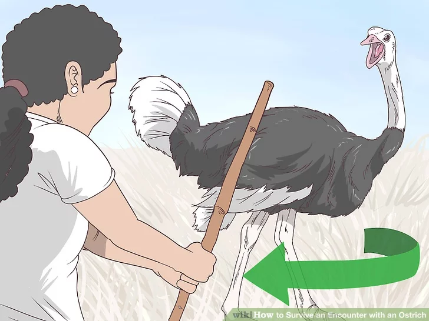
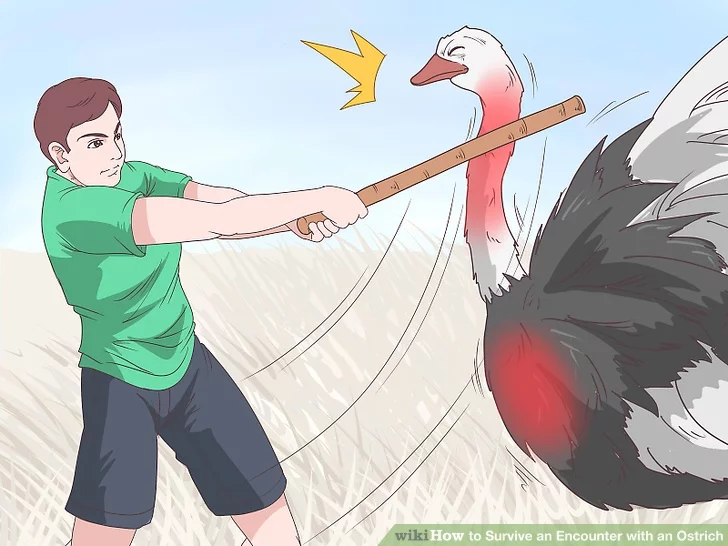
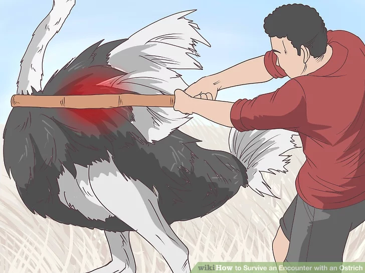

Ostriches can be found in the wild, on safaris, or on ostrich farms. But regardless of where you find them, treat them with the utmost caution—they’re one of the most dangerous birds. Although they do not prey on humans, they've been known to injure and kill when provoked. Extremely fast on foot, they can deliver mortal blows by the sheer force of their legs, never mind their lethally sharp talons. The best thing you can do is steer clear and keep your distance. If that fails, ducking for cover and hiding works best. As a last resort, you may even have to fight them. Wondering how to beat an ostrich? Read on for the ultimate ostrich attack survival guide.
Table of contents
- Fighting and Ostrich
- Evading a Charging Ostrich
- Avoiding Encounters
Method 1: Fighting an Ostrich

1. Use a long weapon
If you are forced to defend yourself against an ostrich, avoid close-quarters combat. Keep as far out of reach of its legs as you can, since ostriches can kick hard enough to kill a lion. Use the nearest, longest object that could be used as a weapon, such as a pole, rake, broom, or branch.
- If you have a gun and need to use it, aim for the ostrich's main body to better ensure hitting your target. Although they will be attacking with their legs and/or beak, their legs and neck are very thin and easy to miss

2: Keep to the ostrich's side.
Consider yourself at the most risk when the two of you are face-to-face. Remember that an ostrich is only able to kick its legs directly in front of it. Stay behind or to the side of the bird as much as possible to keep clear of its most powerful weapon.

3: Aim for the neck.
Consider this to be the ostrich’s weakest body part. Strike it where it is most vulnerable and least protected to defeat it more quickly. Failing that, aim for its breast. Concentrate your efforts between the two as opportunity affords. Continue to strike until it quits and runs away.

4: Damage its wings.
If the ostrich refuses to give up despite your attacks to its neck, aim for its wings when given the opportunity. Know that an ostrich uses its wings not for flight, but to alter course more smoothly when running, just like a ship’s rudder. Damaging its wings may marginally improve your chances of running away in a zigzag fashion if you are forced to retreat.

5: Go for its legs.
If you find yourself behind or to the side of the ostrich with an easy shot to one of its legs, take it. Know that the ostrich’s center of gravity depends entirely upon those two skinny legs. If given the chance, deliver one or both a blow to upset its balance, speed, and striking power.
Method 2: Evading a Charging Ostrich

1: Run for nearby cover.
Expect ostriches to attain speeds of 43 mph (70 km) over open ground. If there is dense vegetation or woods close enough for you to reach before the ostrich reaches you, sprint for that. Prevent the ostrich from attaining optimum speed so it has less chance of outrunning you.
- If there is more sturdy cover than vegetation (such as a car or manmade structure), go for that. A kick from an ostrich’s leg can hit you with an impact of 500 psi, which is enough to kill a human.
- If you don’t think you can make it, DO NOT attempt it. Ostriches are extremely fast and will attack by kicking you in the back as soon as they catch up to you.

2: Conceal yourself
Rest assured that, while ostriches do eat meat, they stick to insects, small reptiles, and rodents.[10] Understand that a provoked ostrich will chase humans primarily because it feels threatened, not because it wants to eat them. At your first opportunity, duck behind cover that conceals you from its view, rather than risk a prolonged chase.[11] Expect the ostrich to lose interest once it thinks that you are gone.

3: Elevate yourself
Remember that an ostrich is incapable of flight. If no hiding places are to be found on ground-level, climb a tree, fence, or other structure.Wait for the ostrich to lose interest and leave before coming back down.
- An adult ostrich typically stands 7 to 9 feet tall (2 to 3 meters). Although it has no teeth, it may jab at you with its beak and potentially upset your balance. Seek a higher elevation to keep out of range.

4: Dive into a thron bush.
Opt for getting pricked by thorns instead of being disemboweled by the ostrich’s razor-sharp talons. If no other hiding spots are available, jump straight into a thorn bush. Wait for the ostrich to leave before climbing out.
- Expect the ostrich to refrain from poking its head in after you, in order to protect its large eyes.

5: Lie on the ground.
Resist the urge to run for cover or elevation if it is too far away. Instead, play dead as a last-ditch effort. Press your stomach to the ground. Cover the back of your head with your arms to protect your skull. Brace yourself for the ostrich to toy with you. Wait for it to tire of this and leave before getting back up. Be aware that this method may still result in injury.
- The risk of injury from the force of impact of an ostrich’s kick is dramatically reduced when you lay down. The ostrich kicks forward, then downward, with most of its force spent in the forward motion.
- The talons still do pose a danger. Lie on your stomach to better protect your organs, since the ostrich may rake you with its talons.
- The ostrich may stand or even sit on you before it tires. An adult ostrich may weigh between 198 and 350 lbs (90 and 159 kilograms).
Method 3: Avoiding Encounters.

1: Beware of your surroundings.
Whenever you are in an area that may be home to ostriches, evaluate the landscape. Avoid open areas. Stick close to cover and note which areas would be the most safe to retreat to should you encounter an ostrich that charges you.

2: Avoid close contact.
Maintain your distance when you spot an ostrich in the wild. Consider any distance less than 110 yards (100 meters) as too close. If an ostrich advances toward you, back away, even if the ostrich appears calm. Never back one into a corner, since this will trigger a “fight” response instead of a “flight” one.
- Although images of people petting, kissing, and even riding ostriches may lead you to believe that it is safe to approach them, note that such images are of tamed ostriches from farms. Even these birds should be treated with the same caution and respect as wild ones to avoid injury.

3: Beware ostriches during breeding season.
Consider them to be at their most easily provoked at this time, especially males, who are tasked with protecting the female’s eggs.[17] Since ostriches tend to roam in pairs or alone at other times of the year, recognize breeding season by the presence of herds numbering anywhere from 5 to 50 ostriches at a time.
- dentify males by their black feathers, white wingtips and tail plumes, and the red flush that appears on the front of their legs.
- Distinguish females by their brown feathers and gray wingtips and plumes.